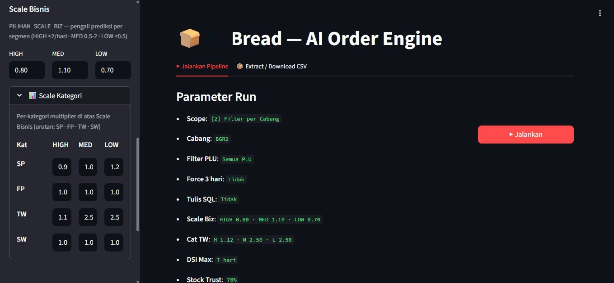

Supply Chain Demand
Forecasting XGBoost
Manual demand forecasting for 6,500+ stores took 4‑5 hours every morning — before any distribution decision could be made. 10+ people spent 4–5 hours every morning on manual forecasting. Now under 1 hour for review and sign-off. Built an automated XGBoost pipeline: 345,011 records, 96.63% WAPE accuracy.
The operational time cost of manual forecasting has been eliminated. Death spiral detection, Eid demand modelling, and new-store cold-start are all built into the pipeline — effectiveness at scale is what the trial is measuring.
Wrong Predictions Mean Wasted Product
Truck fleets depart every morning with predetermined cargo. There is no tolerance for error: over-supply means bread comes back and is discarded, under-supply means lost sales and stores switching to competitors.
- Forecasting done manually in Excel — took a full day, one person, error-prone
- New stores without history receive no prediction
- Death spiral undetected until returns pile up at warehouse
- Manual forecast during festive seasons — Eid stockouts from underestimation
- 345,011 predictions per run — pipeline runs automatically before fleet departure
- Lost sales correction built in — model trains on
Qty_S + AI_Lost_Sales_Est, not corrupted zeros - New stores receive a prediction from day one via cross-store branch benchmarking (by design, not yet measured at scale)
- Death spiral detection logic built in — dual-signal (sales_ratio < 0.85 AND order_ratio < 0.85) — early-warning lead time being measured in trial
- Bundle promo handling built in — gift stock calculated automatically from forecast
- Eid/Nataru tiered boost layer built in — designed to prevent seasonal stockouts, validation pending full Eid cycle
Designed Impact — Trial Ongoing
sales_ratio < 0.85 AND order_ratio < 0.85 must both trigger simultaneously — guards against false alarms from genuine demand drops. Recovery floor is set to 90% of median_60d.Sales_Median_Cabang_PLU_14d, Rank_Toko_di_Cabang) provide a branch-level prior from day one. Whether this produces better allocations than the previous manual baseline is part of the trial evaluation.Forecasting Pipeline — In Use
Run configuration panel: scope, branch filter, PLU, ABC scale multipliers, and stock trust threshold before pipeline execution.

Live trial UI · Branch & store data anonymized
Model Performance
6 Technical Problems Solved
Each of these challenges is why an off-the-shelf model cannot be deployed directly in this context.
reg:squarederror (continuous demand); MED+LOW (<2/day) → reg:tweedie (sparse count data)Qty_S2 = 0 (no stock at day end) and Qty_S = 0, the store didn't just have zero demand — it ran out. Standard XGBoost trains on Qty_S; this system trains on Qty_S + AI_Lost_Sales_Est. The correction is additive, not a replacement, and covers two stockout scenarios from date-level data alone.Qty_S == 0 AND Qty_S2 == 0 → AI_Lost_Sales_Est = Median_Sales_14Hari (full day lost)Qty_S2 ≤ 1 AND Qty_S > 0 → AI_Lost_Sales_Est = Median × 0.30 (partial unmet demand)Qty_S + AI_Lost_Sales_Est — without this, fast-moving stores are permanently under-predicted because every stockout day looks like zero demandsales_ratio < 0.85 AND order_ratio < 0.85median_60d — breaks the feedback loopPILIHAN_SCALE_BIZ[HIGH/MED/LOW] corrects BIAS per demand speed. Tuned empirically: new_scale = old × (1 / (1 + bias%)). Fully data-driven from walk-forward evaluationfloor(pred / req) × gift_unitsXGBoost Feature Groups
±55 active features across 10 groups. Every feature exists for a specific operational reason. Notable: ABC classification is computed per-branch (not global) — a product can be A-class in Bekasi and C-class in Bogor. SHAP consistently ranks lag/rolling and cross-store features highest.
Qty_S_H1 / H2 / H3Sales yesterday, 2 days ago, 3 days ago. Primary short-term signal.Qty_S_H14Sales 14 days ago — captures bi-weekly rhythm. Paired with MingguLalu for full weekly + fortnightly coverage.Qty_S_MingguLaluSales 7 days ago — captures weekly seasonality. Combined with H1–H3, the strongest feature cluster.Rata_Sales_14Hari14-day average. Baseline signal and routing key — determines LOW/MED/HIGH model.Sales_Trend_14v7Ratio of mean_7d / mean_14d. >1 = uptrend, <1 = downtrend. Reads momentum direction.Pct_Hari_Terjual_14% of last 14 days where store actually sold this SKU. Key intermittency signal — different from average sales volume..shift(1) before .rolling() — model only sees data up to T-1 when predicting T. Without this shift, WAPE looks great in training but fails in production.Sales_Median_Cabang_PLU_14dMedian sales of this SKU across all stores in the branch, last 14 days. Anchors new store predictions.Deviasi_Toko_vs_CabangThis store's sales minus branch median. Sudden positive spike = local demand event.Rank_Toko_di_CabangStore rank for this SKU vs. peers in the branch. Top-ranked stores get higher safety buffer.Was_SoldOut_YesterdayBinary: stocked out yesterday? If yes, yesterday's sales under-estimated true demand.Recovery_MomentumSales_Mean_Short / Sales_Mean_Long. Value <1 = declining store. Death spiral ML signal.Hari_Menuju_LebaranCountdown to Eid. D-7 starts rising, D-3 peaks. Covers both run-up and post-Eid drop.Days_Until_Month_EndStores in employee-heavy areas slow before payday — captured here.Putting 96.6% WAPE in Context
WAPE means different things at different data densities. At store×SKU×day granularity with 63% sparse records (LOW segment), 96.6% is not a weak result — it is top-quartile. The real operational metric is BIAS, not WAPE. BIAS +2.57% means total over-order is 2.57% across all 345K predictions.
| Benchmark | WAPE | Context |
|---|---|---|
| M5 Competition winner (Walmart) | ~55% | NON-intermittent data, large stores, high volume |
| Lokad (spare parts, intermittent) | ~90–130% | Most comparable to this context |
| Syntetos & Boylan 2005 (academic) | ~110–140% | Classic benchmark for slow-movers |
| This system — PARAM_VARIANT E (Tweedie + Poisson power=1.0) | 95.1% | Trial best: BIAS −0.39% — optimal theoretical baseline |
| This system — VARIANT B (less regularization) | 93.6% | Better WAPE but BIAS −6.1% — operational risk |
| This system — Quantile α=0.55 (abandoned) | 88.8% | WAPE great, BIAS −13.4% — SP BIAS −49%, unusable |
(VARIANT E: −0.39%)
Tools Used
Under the Hood — Key Engineering Details
Most retail ML systems train on Qty_S directly — actual recorded sales. This system trains on Qty_S + AI_Lost_Sales_Est, estimating unmet demand from stockout and near-stockout signals using date-level data only.
# Shift first, then roll — model only sees T-1 when predicting T # Split into two steps: shift() then rolling().mean() on the shifted column # This keeps both ops at C level — no lambda, no Python loop per group df.sort_values(['KdToko', 'KdProduk', 'TANGGAL'], inplace=True) df['_qty_shifted'] = df.groupby(['KdToko', 'KdProduk'])['Qty_S'].shift(1) df['Rata_Sales_14Hari'] = ( df.groupby(['KdToko', 'KdProduk'])['_qty_shifted'] .rolling(14, min_periods=1) .mean() .reset_index(level=[0, 1], drop=True) ) df.drop(columns='_qty_shifted', inplace=True) # AI_Lost_Sales_Est — additive correction to training target, not replacement # Two scenarios: full stockout (Qty_S=0, Qty_S2=0) and near-stockout (Qty_S2≤1) _lost_full = np.where( (df['Qty_S'] == 0) & (df['Qty_S2'] == 0), # full stockout df['Median_Sales_14Hari'], 0.0 ) _lost_near = np.where( (df['Qty_S2'] <= NEAR_STOCKOUT_THRESHOLD) & (df['Qty_S'] > 0), df['Median_Sales_14Hari'] * LOST_SALES_NEAR_STOCKOUT_FACTOR, 0.0 ) df['AI_Lost_Sales_Est'] = (_lost_full + _lost_near).astype('float32') # Training target = actual sales + estimated lost demand # Standard XGBoost trains on Qty_S alone — this system trains on true demand tgt = (df['Qty_S'].fillna(0) + df['AI_Lost_Sales_Est'].fillna(0)).clip(lower=0)
Daily Pipeline — End to End
From raw sales data in SQL Server to a distribution-ready forecast file — fully automated pipeline currently in active trial. Production rollout pending business validation.